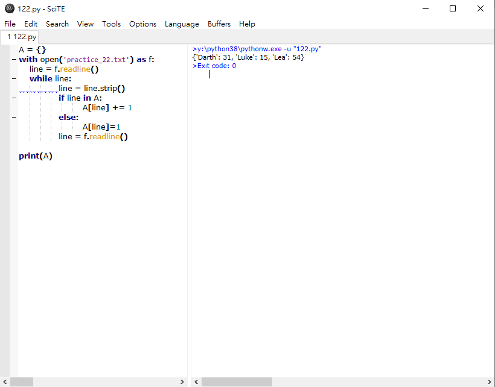

HW3 <<
Previous Next >> 23. File Overlap(檔案交疊)
22. Read From File(讀取檔案)
練習22
討論
主題:
- 讀取檔案
- 辭典
讀取檔案
讀取檔案與撰寫檔案十分類似，如同在練習21(I discussed before in Exercise 21)提到。但是，Python 3.3文檔( official Python 3.3 documentation)總是最好的來源。
簡而言之，讀取檔案需要兩個步驟:
- 打開檔案
- 讀取
開起檔案來讀取與開啟檔案來寫一樣，只是使用了不同的標記:
with open('file_to_read.txt', 'r') as open_file:
all_text = open_file.read()
注意此處的"r"代表"read"，上述程式碼案例將整個open_file一次讀取到all_text變量中。但是，這代表我們現在在all_text中有一段很長的數列， 而我們可用所需的數列在Python中對其進行操作。
另一個從檔案中讀取資料的方法是逐行讀取(line by line):
with open('file_to_read.txt', 'r') as open_file:
line = open_file.readline()
while line:
print(line)
line = open_file.readline()
除了print(line)，你可以想像對文本進行任何操作...如果你將它儲存成變數，然後你就有一個數列可以用 .strip()或是.split()之類的東西。
辭典
辭典是Python關聯兩項資料的方式，官方文件(official documentation)表示了一切。
student_scores = {'Adama': 100, 'Starbuck': 75, 'Apollo': 80, 'Athena': 85, 'Agathon': 90}
adama_score = student_scores['Adama']
你可以回到辭典以修改並儲存分數:
adama_score = student_scores['Adama']
adama_score += 100 % adama_score is now 200. This doesn't change the dictionary value
student_scores['Adama'] = adama_score % the score in the dictionary is now updated
我不能要求辭典使用key來關聯value，但我可以獲得一個包含所有keys的列表，也可以獲得一份包含所有values的列表:
all_scores = student_scores.keys()
all_names = student_scores.values()
我可以使用in關鍵字(就像列表一樣)，像列表推算式一樣做辭典推算式(這些蠻酷的，你可以去官方bit(official bit about these)看看)，然後在辭典中重複這些元素(句法只有一點點不同)。
for pair in student_scores.items():
print(pair)
然後會打印出(Adama, 100)之類的keys和values。
因為辭典沒有順序，迴圈它們不能保證它們以特定的方法出現，所以要小心。
練習

HW3 <<
Previous Next >> 23. File Overlap(檔案交疊)